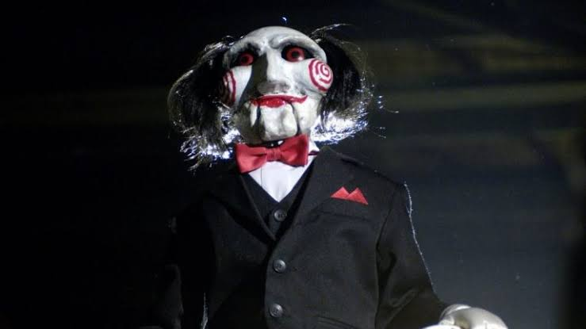

Jigsaw

Jigsaw é um personagem da série de filmes de terror Saw (Jogos Mortais). Ele é um serial killer interpretado pelo ator Tobin Bell. Jigsaw sempre proporciona opções às vítimas, para que elas possam escolher entre a vida e a morte. Segundo o personagem, isto faria com que os participantes de seu jogo valorizassem a vida que têm. Por esse motivo, ele afirma que não deve ser identificado como assassino pois, no seu ponto de vista, todos os participantes têm a chance de sobreviver.
Uma dose extra de travessuras sempre traz diversão, certo?

< Anterior | | Próximo >